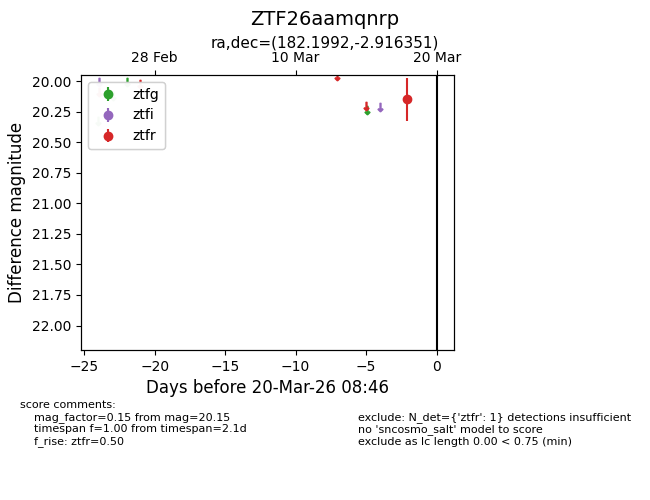
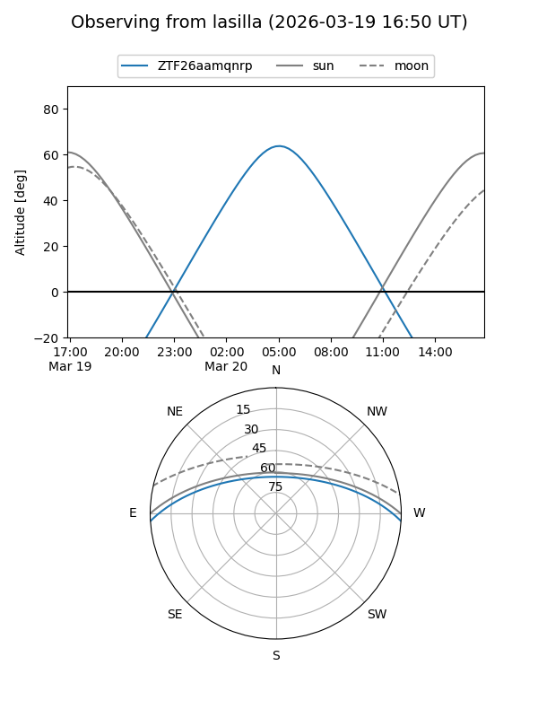
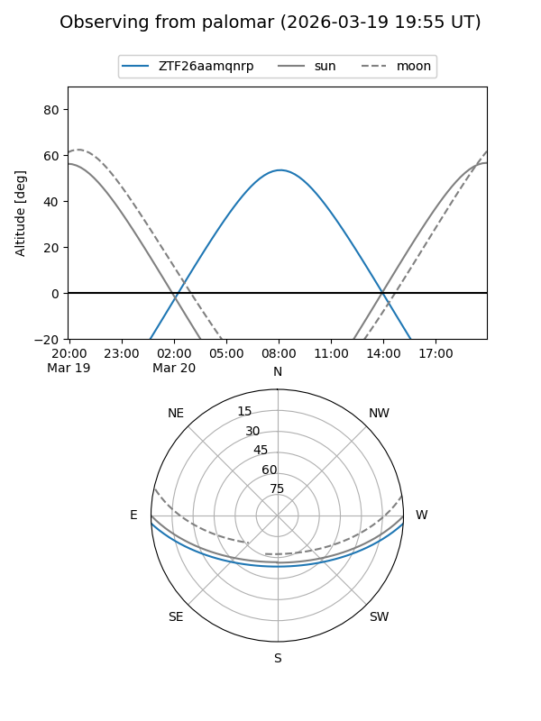

ZTF26aamqnrp
Target ZTF26aamqnrp at 2026-03-20 08:48
Aliases and brokers:
FINK: link
Lasair: link
ALeRCE: link
alt names
ZTF26aamqnrp (ztf,fink_ztf)
Coordinates:
equatorial (ra, dec) = 182.1992,-2.91635
equatorial (HMS+DMS) = 12:08:47.81,-02:54:58.86
galactic (l, b) = (282.3820,+58.24386)
Flags:
Photometry:
last ztfr=20.15
1 ztfr detections
Lightcurve

Visibility


Additional plots